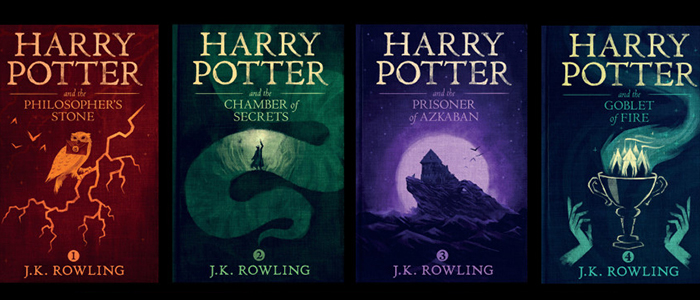

Harry Potter
The Series
Harry Potter is a series of fantasy novels written by British author J. K. Rowling. The novels chronicle the life of a young wizard, Harry Potter, and his friends Hermione Granger and Ron Weasley, all of whom are students at Hogwarts School of Witchcraft and Wizardry. The main story arc concerns Harry's struggle against Lord Voldemort, a dark wizard who intends to become immortal, overthrow the wizard governing body known as the Ministry of Magic, and subjugate all wizards and muggles, a reference term that means non-magical people.

Since the release of the first novel, Harry Potter and the Philosopher's Stone, on 26 June 1997, the books have found immense popularity, critical acclaim and commercial success worldwide. They have attracted a wide adult audience as well as younger readers, and are often considered cornerstones of modern young adult literature. The series has also had its share of criticism, including concern about the increasingly dark tone as the series progressed, as well as the often gruesome and graphic violence it depicts. As of May 2013, the books have sold more than 500 million copies worldwide, making them the best-selling book series in history, and have been translated into seventy-three languages. The last four books consecutively set records as the fastest-selling books in history, with the final instalment selling roughly eleven million copies in the United States within twenty-four hours of its release.
The series was originally published in English by two major publishers, Bloomsbury in the United Kingdom and Scholastic Press in the United States. A play, Harry Potter and the Cursed Child, based on a story co-written by Rowling, premiered in London on 30 July 2016 at the Palace Theatre, and its script was published by Little, Brown. The original seven books were adapted into an eight-part film seriesby Warner Bros. Pictures, which has become the second highest-grossing film series of all time as of August 2015. In 2016, the total value of the Harry Potter franchise was estimated at $25 billion, making Harry Potter one of the highest-grossing media franchises of all time.
A series of many genres, including fantasy, drama, coming of age, and the British school story (which includes elements of mystery, thriller, adventure, horror and romance), the world of Harry Potter explores numerous themes and includes many cultural meanings and references. According to Rowling, the main theme is death. Other major themes in the series include prejudice, corruption, and madness.
Harry Potter
A series you should watch.
Developed by Bhanu & Vishal